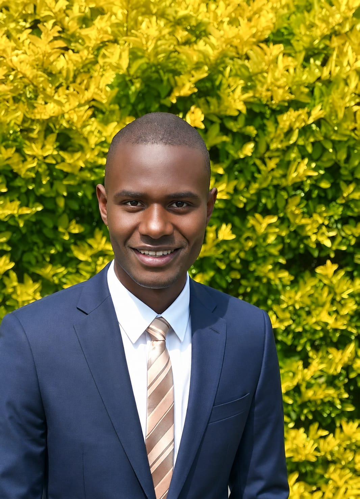

Nairobi HQ
Founder & Project Director
Read Full Story →
Enock Wekesa Muyundi
Kenyan youth leader, social impact practitioner, educator and peacebuilding advocate holding a Bachelor of Commerce from Mount Kenya University. General Secretary of YEEK and alumnus of UPG Sustainability.